Blog: Jeremy Ellis aka @Rocksetta About Edge Impulse Group Data Collection
Sharing of your Edge impulse projects live to other people needs a Pro paid account.
Talk to them about your situation Contact Edge Impulse.
I am a Canadian Teacher who trys to simplify complex tech for my classroom and for my after school group with https://www.gearbots.org/overview/
See my website at https://www.rocksetta.com/.
High School Group Data Collection of Acceleration Data using the students cell phones and a Nano 33 Ble Sense Arduino
- Load EdgeImpulse.com I like to load both the forum and Doc into their own tab before login in.
- In Edge Impulse pull down your login name and select an Impulse or make a new one.
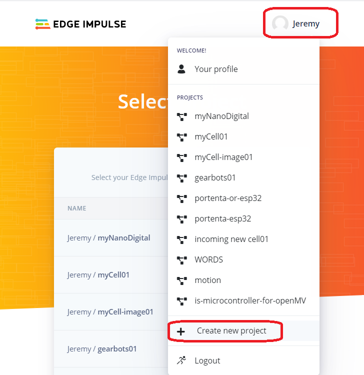
- Now start uploading data by either connecting your Arduino. See instructions
or a choice that is much faster for acceleration, sounds or images is to use your cell phone.
You could also use your laptop or desktop computer for the sounds or images but be warned for images the cell phone is much easier to position the camera than
working with your laptop.
- Get used to the "Dashboard", lots, but not everything happens here.
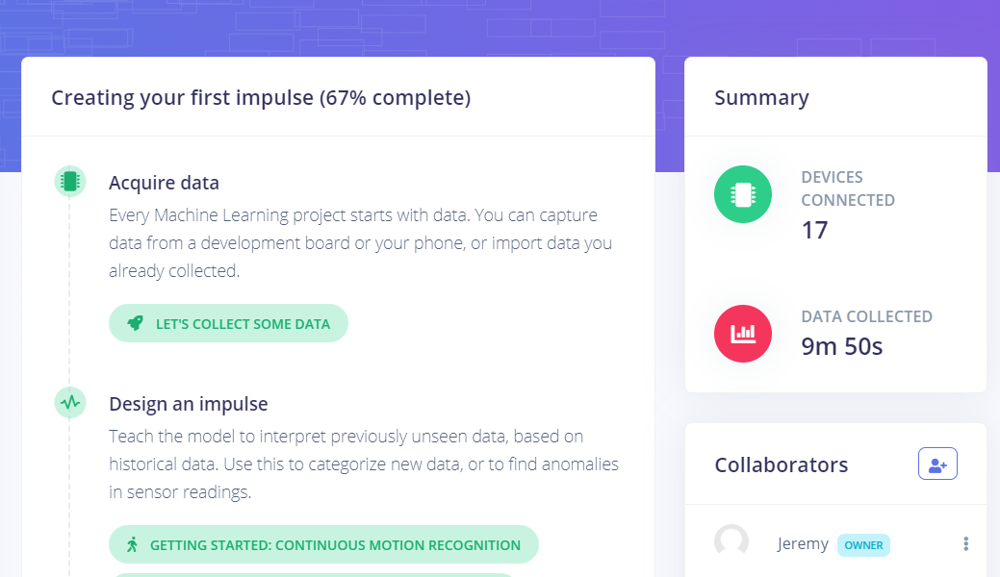
At the bottom of the "Dashboard" you can delete the Impulse, but more importentaly Delete the data if you quickly want to start again.
-
-
These images will be used when I have written about them:
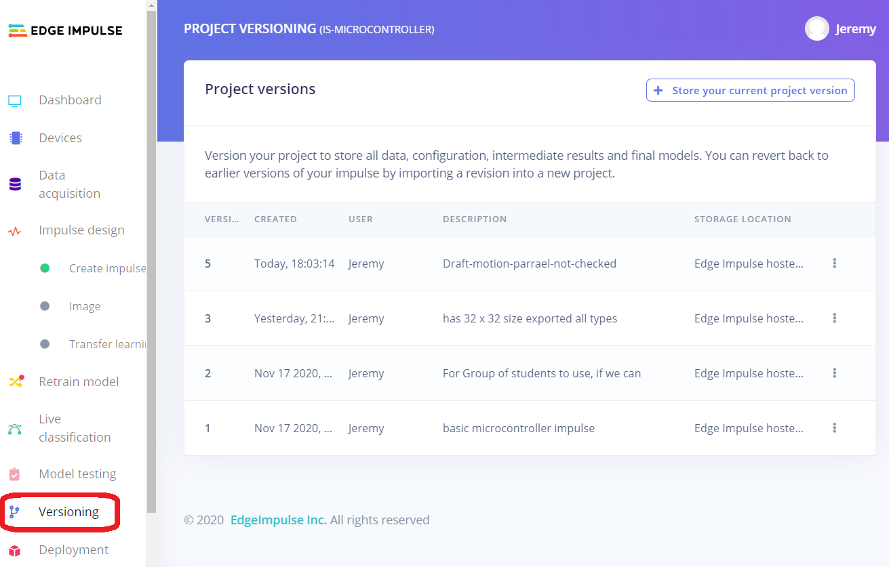
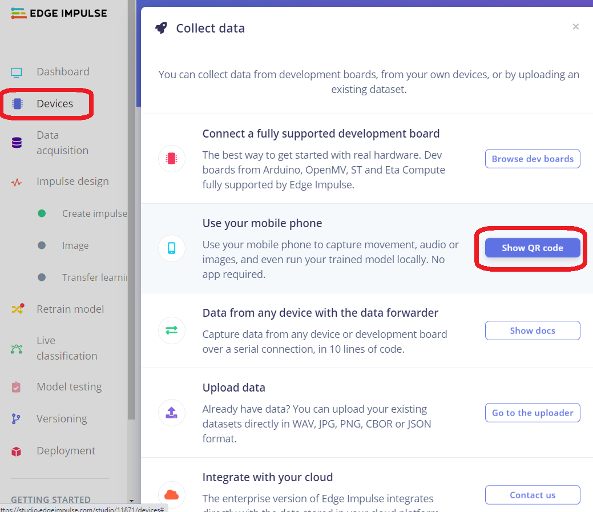
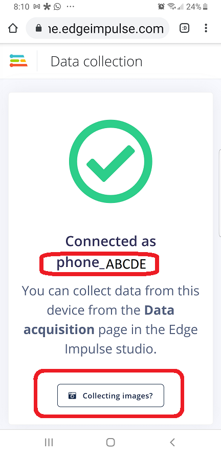
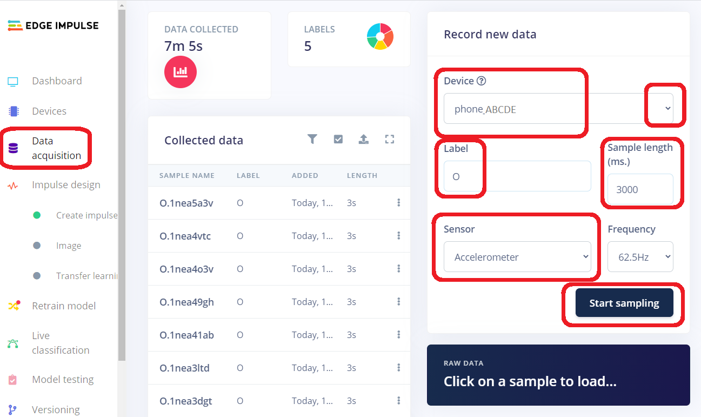
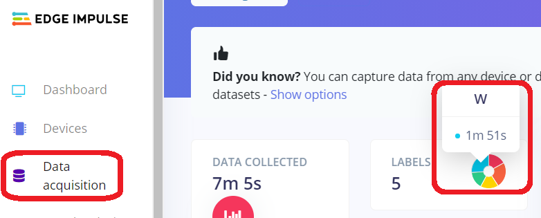
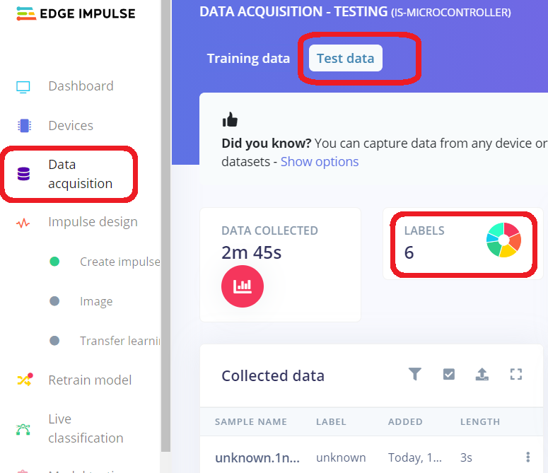
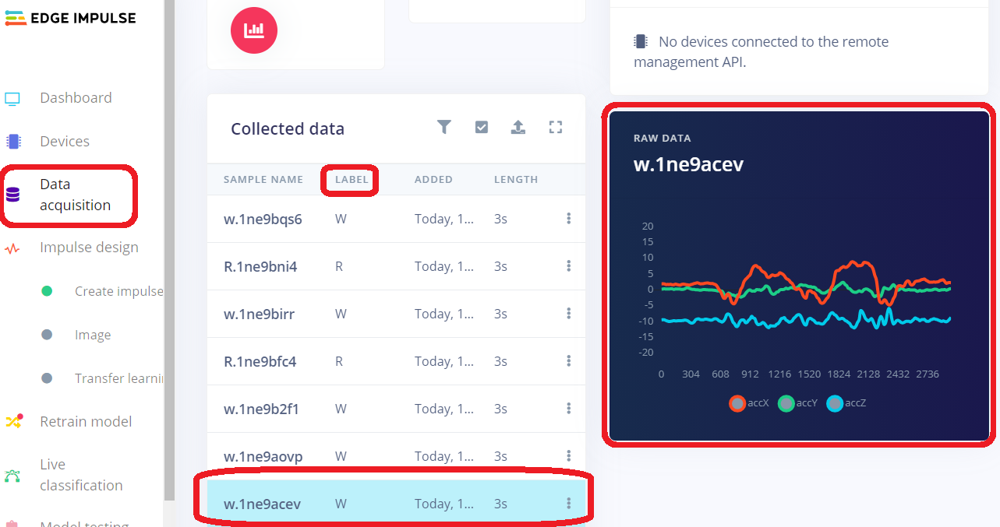
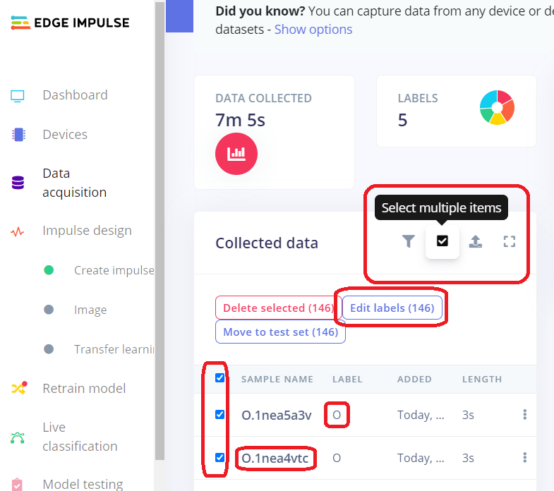
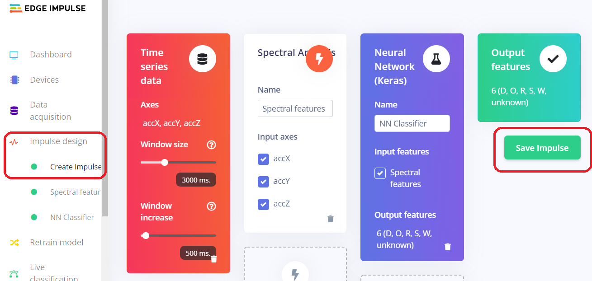
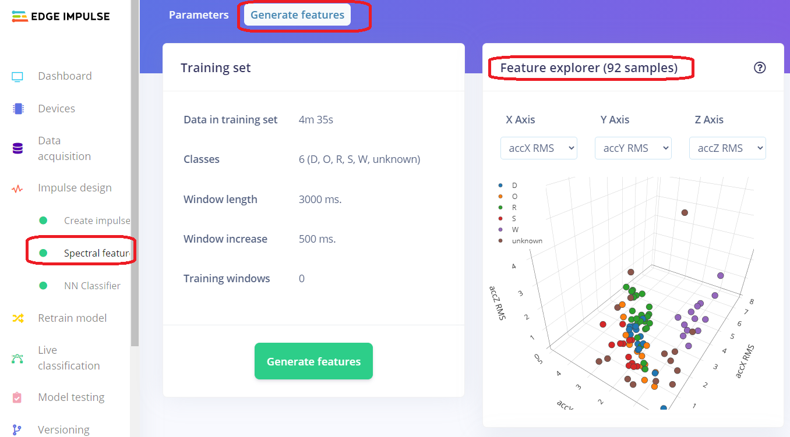
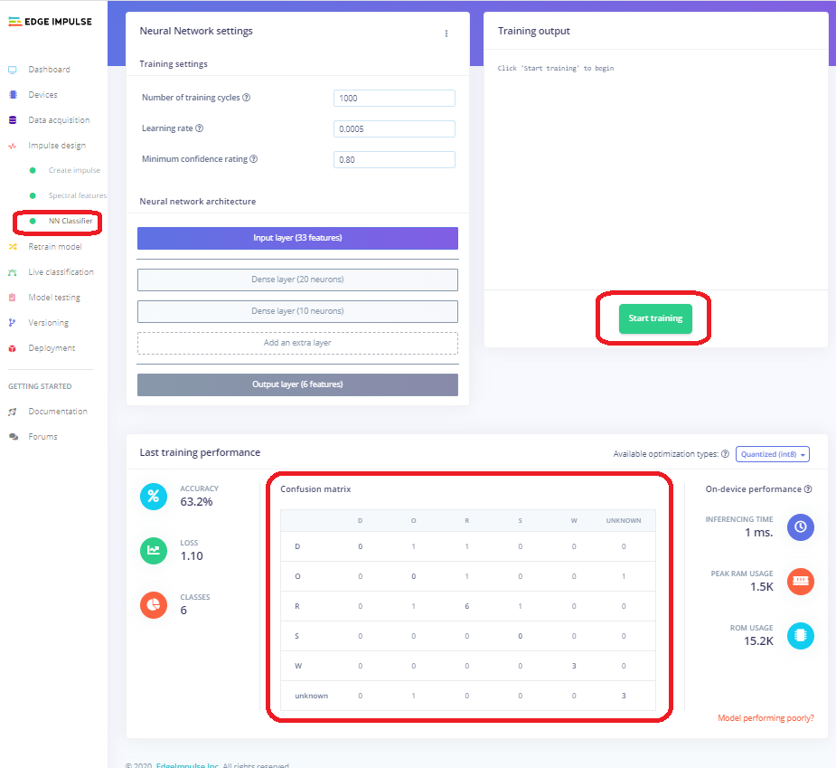
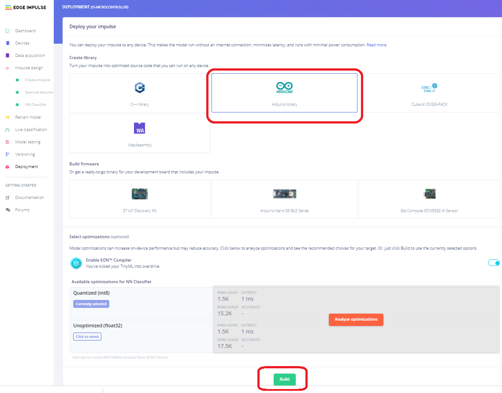